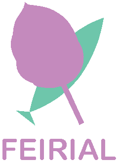
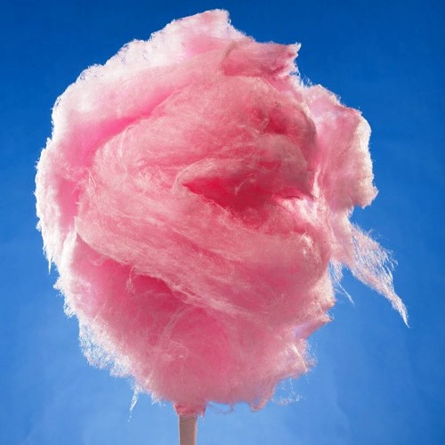
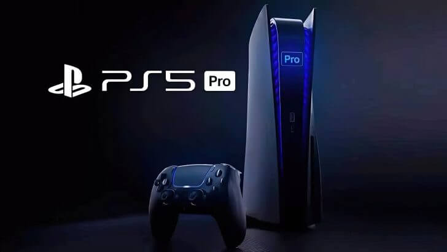
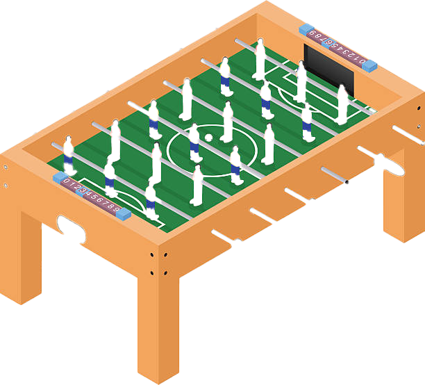

FEIRIAL
O melhor arraial precisa do melhor entretenimento e algodão doce! Vai um joguinho de FIFA? Ou apostar umas jolas num jogo de matrecos?
------------------------------------
O MELHOR ALGODÃO DOCE DO MUNDO!
------------------------------------
TORNEIROS DE FIFA, NARUTO E ROCKET LEAGUE!
------------------------------------
MAIS DE 10 MESAS DE MATRECOS PARA JOGAR!
------------------------------------
O Feirial é o serviço do Sardial que vai tratar do teu entretenimento durante o melhor arraial do mundo! Tens atividades para toda a família e amigos! Poderás ganhar prémios incríveis nos torneios! Junta te a nós! Mais informações na nossa aplicação (hiperligação no fim da página)!